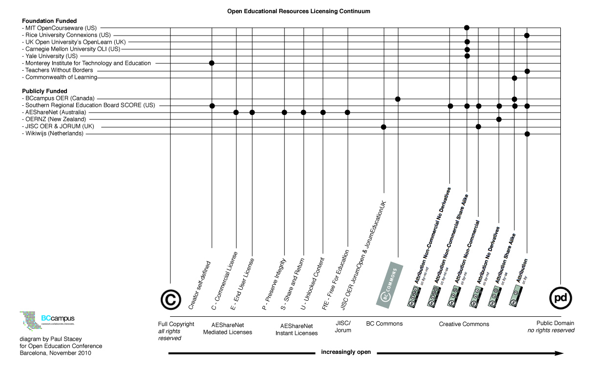

2011-04-19
簡介BC Campus：
BC Campus[1]，為加拿大卑詩省教育部資助之遠距技術和遠距教學服務計畫，目的在於透過遠距教學以及遠距技術服務。此計畫服務總部位於溫哥華，該服務內容提供給卑詩省內25個公共教育機構(各級學校或其他機構)，供其學生和教職人員學習。計畫的營運資金來自於該省教育部提供，並負責課程內容的走向。2003年，教育部將資金移轉到線上學習領域後，雖喪失了教育部的資源，卻使BC Campus注意到當時逐漸興起的開放式教育課程計畫，像是麻省理工的開放式教育平台[2]以及Connexion[3]平台。計畫主要成員Paul Stacey[4]當時主張應該和卑詩省當地中等以上教育機構合夥，並提出「可抵學分之開放式課程」。同時，他也和多個開放式線上平台提出此想法，以促進當地教育發展。
開放教育資源基金：以基金會為之或是政府資助？
去年Paul Stacey在開放式教育研討會中，發表一篇論文，其探討開放式教育資金出於基金會提供或政府資助時，二者之異同。過去十年來，私人基金會是開放式教育最大宗的資金來源，但近年來逐漸出現以政府資助（即納稅人為資助者）之例子。Stacey在其論文中指出，二種資金來源會使得該開放式教育有不同的目標，雖然二者資助時皆是出於「提升教育資源之接觸性」，但二者負責之對象不同，若為基金會資助，只要對資助者負責即可；若為政府資助，則基金會要對所有納稅人負責。另外，基金會資助者所偏好的內容較為全球性，且希望推廣人性化、人道主義的概念；但政府資助者所偏好之內容，則受限於特定地理區域（通常是和資助的政府或地區相關），他們只著重把服務推廣到特定區域，而不是將服務推廣給全世界。此種情況可能是因為公部門資金有限，將教育預算投資給開放式教育課程，希望藉由開放式教育得到最大的教育推廣效果。究竟，開放式教育得否兼顧二者的目標？
再者，除了內容和目標的差異以外，在捐款用途上也有不同。基金會捐款大多給與幾個特定的知名教育機構，並偏好將資金用於已公開的教育課程、筆記或是課程相關活動上，基金會的捐款通常有一個實際的運作開始和結束期限，並不是持續不斷地提供捐款。而政府資助的捐款，大多用於可抵免學分的開放式課程內容，以提升政府當地社會、就業市場之教育資源。政府捐款對象也和基金會不同，他們將款項捐給當地所有參與計畫的教育機構，並經常支持開發新的教育內容，政府同時也較積極注意新計畫以及運作中計畫的運作。
授權範圍以及授權種類之選擇？
針對許多開放式教育課程平台，Stacey自行繪製了相關的教育資源圖比較表如下：

Stacey指出，基金會資助的開放式教育課程內容，通常僅適用單一種類的創用CC授權，例如載明CC-BY（姓名標示）或CC-BY-NC-SA（姓名標示-非商業性-相同方式分享）；而政府資助之開放式教育課程內容，通常會使用多種不同授權方式。Stacey認為，應增加開放式教育課程內容之授權方式，使加入開放式教育可獲得更多資源。但他也承認，一旦允許各別計畫選擇不同的授權方式，將使得開放式教育課程在混用這些教學資源時，難以適用授權方式，甚至使得課程內容無法結合。同時，他也發現許多開放式課程內容皆未進入公領域，故CC授權在開放式教育課程是否具有高可行性，仍有待考驗。
BC Commons對於創用CC之評論與建議
本開放式課程使用的授權條款BC Commons，乃是參考創用CC授權，但兩者仍有不同之處。創用CC是全世界通用之授權條款，而BC Commons僅適用於參與該計畫所有學校、機關、教職員以及學生。本開放式課程透過BC Commons授權，使教育資源得逐漸進入公共領域。Stacey提到：「當我們向對方表示他們的教材將會完全開放授權給大眾，將會使對方認為自己已經完全喪失對該教學內容的控制。即使後來提出BC Commons也無法完全省略此疑慮，但能夠減少內容提供者的恐慌，因為該資源的使用範圍因為BC Commons而控制在卑詩省內。」他認為，BC Commons的成功也是因為BC Commons條款本身是由當地開放式課程使用者以協作之方式完成，此種由地區內部者形成的拘束(BC Commons)大於外部形成之拘束(創用CC)。
Stacey針對創用CC提出數個建議如下：
- 開發一種追蹤程式，使其附著於CC授權檔案中，並得將該檔案使用情況回報給開放式課程內容之創作者。此法乃是因為我們知道「使用的情況將會影響創作的動機」。
- 建構一個更簡單的方式，使權利人可以簡單地選擇何種創用CC授權、開放創用CC連續授權，並使權利人可以簡單地變更為更加寬鬆的授權方式。
- 使創用CC更加區域化（就像BC Commons進行當地化一樣），應許可各地有區域特色的創用CC條款。
- 使創用CC授權內容更加細緻，例如：開放入公領域、商業／非商業性使用、衍生著作……等，這些授權條款將會影響是否要分享其內容，尤其是開放式課程內容之權利人，也會受到條款內容決定應否分享。
- 考慮在授權檔案中加入該檔案之相關數據資料，例如權利人偏好與他人合作、允許修改的程度等等。
- 當該授作品是跨國、跨州或跨部門，或是該作品內容是來自於多個不同組織或機構成員所共同作成，當權利人允許該作品成為教育內容或授權給政府時，應該使權利人得選擇以創用CC方式授權給教育機構或政府。
- 持續和程式公司合作，開發一種程式，內嵌於授權給教育使用之作品，使其授權時在沒有為其他授權表示時，直接採取創用CC授權。
開放式教育之展望
Stacey認為，雖然政府尚不相信將其教育資源授權給全世界使用，將會對其國內人民帶來最大利益，但此種觀念在未來必定能夠獲得證實。Stacey也認為，未來不論是私人基金贊助者或是政府，最終對於開方式教育的形式達成共識：建構可抵免學分的開放式課程。他也提出，開放式課程將會轉變整個學習體制，並且影響傳統的教學環境。Stacey預測：「藉由網路傳輸，開放式教育課程有著『學生之間互相影響學習』之特色，此種學習方式遠比傳統教學來得好。」為了左證此見解，Stacey也認為應該要加強學生對於教材內容之創造動機，「一般而言，我們將學生當作開放式教育之消費者，但實際上我相信學生在開放式教育之下，其創作的內容應比教育者還要豐富。」他預測未來學生將會因為自己在開放式教育課程中創造教材而獲得學分或其他利益。
市場對於受過完整訓練的教育人才之需求並不會消失，教師在教育領域中是持續參與且不可或缺的角色，但要注意，傳統的「教- -學」模式已逐漸被揚棄，由教師帶領學生、和學生一起學習創造的教學方式才是現今教學最佳的方式。Stacey指出，目前絕對不可能設計出一個一體適用於未來各種情況的開放式教育課程。開放式教育有許多可能的作法，使其可以和目前傳統教育相比擬，同時，Stacey也對開放式教育未來發展的各種可能趕到興奮，他認為開放式教育可能會出現類似「大學教育」的型態，而Mayne Mackintosh[5]也確實往此方面著手進行。Stacey表示：「我們正在見證開放式教育藉由世界多元意見和技術，改變傳統教育方式的一刻」。開放式教育透過全球性網絡的鍵結以及結合全球教育資源，將能夠實現所有教育者所期望的目標。
[0] 本文譯自https://creativecommons.org/weblog/entry/26963（最後造訪日2011/04/15）(連結失效)
[1] BC Campus官方網站 （最後造訪日2011/4/17）
[2] 麻省理工的開放式教育平台（最後造訪日 2011/4/17）
[3] Connexion （最後造訪日 2011/4/17）
[4] 為該計畫之「校園溝通、關係及學術交流機構」主任，詳見BC Campus網頁。（最後造訪日 2011/4/17）(連結失效)
[5] OER Foundation之主任，詳見http://wikieducator.org/User:Mackiwg。（最後造訪日2011/04/18）